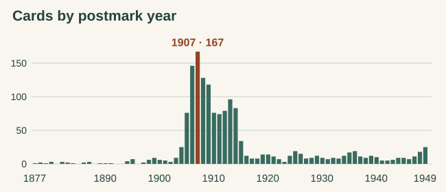
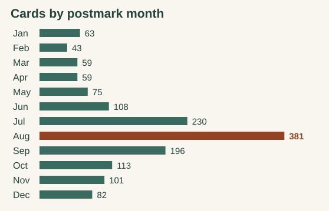
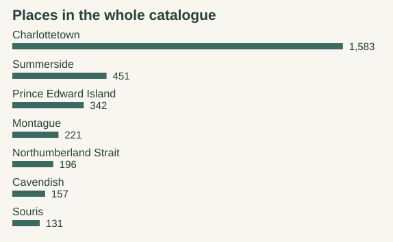
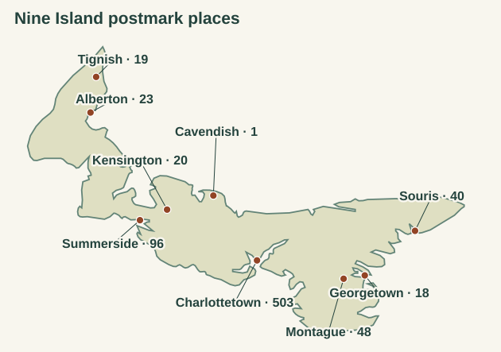

The Island in the Post, 1877–1949
The first card in this story has no picture. On March 31, 1877, the cashier of the Union Bank of P.E. Island filled in two small spaces on a printed form. He supplied the date and acknowledged a letter of the 22nd. Turn it over and there is a manager’s address, a Charlottetown cancellation and a one-cent postage impression. That is all the bank needed to send an answer. It is also enough, nearly a century and a half later, to put the first mark on our chart.

I wanted to see what would emerge if I turned over the whole collection. Of the 4,694 catalogue numbers in this edition, 1,544 have a clear year from 1877 through 1949 in the postmark field. Many others have a perfectly good picture and a blank or indistinct back. Those still have their place in the collection. To see when people used the mail, I’ve counted the ones with a postal date.
Before there was a view to send
Canada issued its first official postal cards in 1871. The penny bought a piece of stationery with the postage already on it. The address had a side to itself. The other side could carry a few words in longhand or, as the Union Bank discovered, a printed reply with blanks to fill. Two examples from 1878 give a sense of the different kinds of business that little penny could do. The University of Alberta Library’s history of the postcard
James R. Reid used one to give notice that he would apply to the Queens County court for his discharge from insolvency. He wrote it in Charlottetown on March 16, and the card bears a March 25 cancellation. It travelled across town. Another went from Montague Bridge to Montreal that May. On the address side the Island mark is faint. On the message side the Montreal receiving mark is wonderfully clear. Two offices handled the same card. It gets one place in the year chart. Reid’s handwritten notice, 3090 · Montague Bridge to Montreal, 2458
The postcard years, one bar at a time

The steep part of the chart fits within a working lifetime, or even a childhood. There are 25 cards from 1904, 76 from 1905 and 146 from 1906. The ten years 1905 through 1914 account for 1,043 of the 1,544 dated cards. Picture and message were also finding a new arrangement. In 1904 Canada authorized the divided back. A sender could put the address and message together and leave the whole face for the picture.
Islanders and their correspondents did things their own way. Look at the Minto in the ice on card 0883. Nellie filled the pale sky above the steamer with news and put the stamp beside the ship. On the address side, a Tuck’s card printed in England, the instructions distinguished between local use and sending it abroad. The October 1905 Charlottetown postmark and the London address tell us how this particular copy travelled. Nellie’s message above the ice, 0883

After 1914 the bars grow much shorter. Some wartime cards I prize most could never add height to them. The view of the artillerymen aboard the Cacouna belongs to the opening days of the war on other evidence. The Odd Fellows’ carriage can be dated from a newspaper. Neither a recognized face nor an identified ship counts as a postmark here. The curve records what reached this collector with its postal evidence intact. It would take post-office returns to tell us how much mail the Island actually sent. The artillerymen at the wharf · The Odd Fellows’ carriage
August in the mailbag

July, August and September together supply 807 cards, a little over half of those with a month. February supplies 43. August alone supplies 381. The back of a card sometimes explains what brought a writer to the Island that month. On August 10, 1949, a visitor wrote home to Dad about warm water and breakers, using a card of Avonlea Lodge in Cavendish. The picture shows the little buildings set apart on a stretch of grass. The postmark reads Hunter’s River. The writer also tells Dad about a trip into Charlottetown the previous day to see the movie Anne of Green Gables. The cottages and the swimmer’s letter, 1532
There is a trap in counting summer scenes as summer mail. Here is a deeply snow-covered Montague road, the trees bent in at the left and telephone poles following the road into the distance. The message says the mailman is due. The cancellation is Cardigan, September 1, 1949. That winter scene belongs in September’s bar. The winter road posted in September, 2689

The places in the whole collection

Open the album at random and the likeliest place to turn up is Charlottetown. I have 1,583 cards filed there. Summerside has 451, Montague 221. But the third most frequent label is simply “Prince Edward Island,” and the fifth is the Northumberland Strait. Where would you file a ship out in the ice between provinces? In this collection the strait has a place of its own, with 196 cards. Across the whole catalogue there are 201 place labels. Turn those same cards over and the geography changes.
Which town did a postcard come from?
Take two cards out of the same pile and the Island can seem to swap ends. The Charlottetown Hotel appears above a note about a holiday full of lobster and trout. It went through the post at Montague. The two naval launches on another card are alongside a warehouse in Montague. That copy bears a Charlottetown postmark. A map made from picture titles would put both pieces of mail in the wrong place. The hotel sent from Montague, 2150 · The Montague boats sent through Charlottetown, 4617

In these same 1,544 records, Summerside is the catalogued place on 174 cards and the clear single-office postmark on 96. Kensington goes the other way, with 9 records filed there and 20 marks. Cavendish has 22 records filed there and just one clear Cavendish mark. Those figures describe two different sorts of evidence left by the people who made, chose and posted these cards. A visitor could buy the picture in one place, carry it in a pocket and post it farther along.
Some travelled in the other direction altogether. In June 1886 a correspondent in Paris filled the message side of a French carte postale with close handwriting and addressed the other side to Charlottetown, Prince Edward Island, Canada. Charlottetown earns its place in the catalogue as the destination. Paris supplies the postmark. The card belongs just as much to Island postal history as one that started here. From France to Charlottetown, 1740
I’ve ended this reading in 1949. The card I’d put beside the last bar shows Dalvay House across the water. On the back the writer put Stanhope Beach and August 8. The cancellation that day reads Summerside. Three Island places, one summer day, and a good reason to keep turning the cards over. Dalvay, Stanhope and Summerside on one card, 0761

Read the figures or follow a card
This is a November 2026 snapshot. Each catalogue number counts once, including separately collected copies of a view. A complete, unquestioned year in the catalogued postmark field qualifies. Months and offices have their own tests, so a partly readable stamp can still contribute a year. Railway routes and uncertain place readings stay out of the nine-town office comparison. The cutoff is a postal year, and no printing process has been inferred from it. The tables also compare all 201 catalogue place labels with the 126 represented in the dated group and let you open the individual cards behind each year. Explore the numbers and the cards
Map outline from Natural Earth, with places located from the Canadian Geographical Names Database. Natural Earth · Canadian geographical names